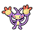
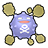
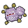
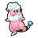
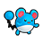
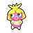
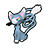
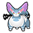
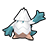
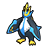

Icons like this (lighter) restore the player's Styler by the specified number of energy.
Icons like this (lighter) restore the player's Styler by the specified number of energy. Icons like this (POW) increase the player's Styler's power by 20%.
Icons like this (POW) increase the player's Styler's power by 20%. Icons like this (SPE) increase the player's movement speed.
Icons like this (SPE) increase the player's movement speed.Check out WarriorGallade's post on this Mission for more specific tips.
| Rank | AP | Slates |
|---|---|---|
| S | 80 | Prinplup (90%) Empoleon (10%) |
| A | 55 | Smoochum (100%) |
| B | 40 | N/A |
| C | 30 | N/A |
| Pokémon | Quantity | Group | Friendship Gauge |
AP | Slates | |
|---|---|---|---|---|---|---|
|
 |
Ambipom | 2 (Patterns 3 & 4) | Normal | 2,340 | 8 | Aipom (50%) Ambipom (50%) |
|
 |
Koffing | 3 | Poison | 1,300 | 4 | Koffing (95%) Weezing (5%) |
|
 |
Weezing | 13 (Patterns 1 & 3) 1 (Patterns 2 & 4) |
Poison | 2,600 | 7 | Weezing (90%) Koffing (10%) |
|
 |
Flaaffy | 2 | Electric | 1,820 | 6 | Flaaffy (80%) Mareep (15%) Ampharos (5%) |
|
 |
Marill | 1 (Patterns 3 & 4) | Water | 1,300 | 3 | Marill (80%) Azumarill (20%) |
| Politoed | 12 (Patterns 2 & 4) | Water | 2,132 | 6 | Politoed (100%) | |
|
 |
Smoochum | 5 | Psychic | 936 | 3 | N/A |
|
 |
Glameow | 2 (Patterns 1 & 2) | Normal | 1,300 | 4 | Glameow (90%) Purugly (10%) |
|
 |
Purugly | 2 | Normal | 2,860 | 7 | Purugly (90%) Glameow (10%) |
|
 |
Snover | 2 | Ice | 1,196 | 4 | Snover (100%) |
| Pokémon | Group | Friendship Gauge |
Agitated Gauge |
AP | |
|---|---|---|---|---|---|
|
 |
Empoleon | Water | 9,860 | 1,188 | 13 |
Text of this section & map image are taken from WarriorGallade's post on the subject, supplemented with information from the official Prima guide book, and condensed/reorganized slightly. Used with permission.
This Mission contains four different patterns of wild Pokémon that can appear. Click a thumbnail below to view that pattern's map.
Legend:
Icons like this (lighter) restore the player's Styler by the specified number of energy. Icons like this (POW) increase the player's Styler's power by 20%. Icons like this (SPE) increase the player's movement speed.This level introduces invisible tiles, which flash bright green for a short time roughly every 4 seconds. Memorize their locations, since trying to locate them through trial and error costs time. Capture 5 Smoochum, who are easy to catch, but the stage is large and missing one means heavy backtracking. Weezing/Politoed circling the path aren't difficult to capture, but you can get chained into multiple captures if you're careless. Time is generous, so a clear is always possible if you avoid backtracking.
The invisible tile locations, in order, are: top-left, bottom-left, top-right, top-right, middle. The last two are in a separate room whose structure becomes more annoying in later missions; the entire left half of that room is useless.
Pattern IdentificationSome Pokémon are only found in certain patterns, so grinding for their Slates is dependent on getting the correct pattern.
Sometimes, the attack telegraphed by a !! or !!! might be one of three different attacks, as follows:
After agitation, Empoleon may sometimes leave water pillars where it walks that fade after a few seconds.
Difficulty depends on knowing the tile locations and the general Smoochum areas; a blind run will likely run out of time. You finally get all four powerups again, so you can play more recklessly against Empoleon. Expect a B rank once you know the layout and collect everything, and A rank after a few attempts. S rank is close but may be held up by Empoleon's stalling water jets.
Piplup continues to have a real niche despite the type disadvantage: its slowing effect, range, and quick recharge counter Empoleon's speed. No good Electric or Grass Assists are available yet. Sceptile is a medium-range option that could do a lot of damage, but it risks being hit by the water spirals. Partner choice matters less here than in the last mission.